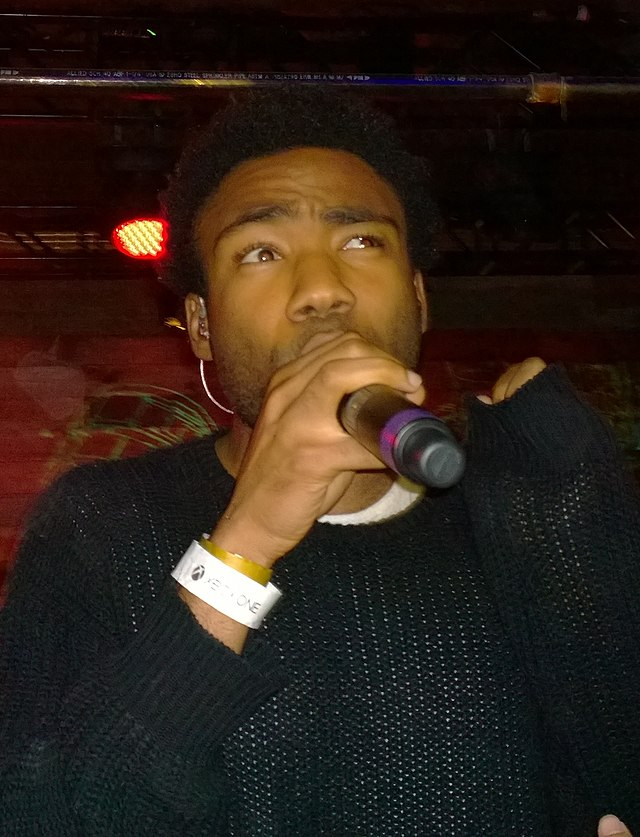
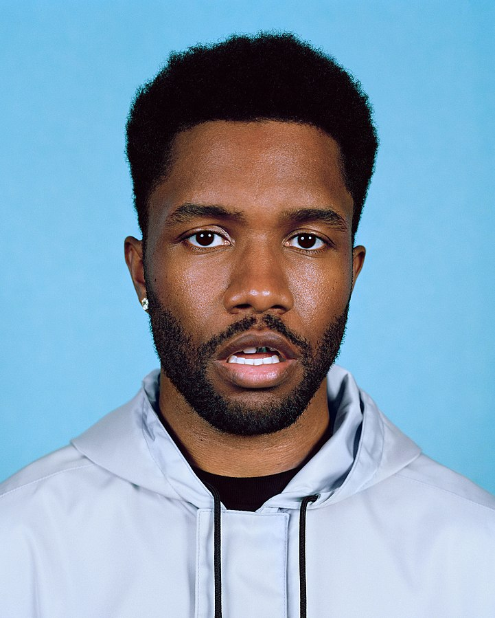

Artist Info

Originally by EWatson92 on Flickr, licensed under CC BY 2.0.
Childish Gambino
Genre: R&B/Hip-Hop/Rock/Rap
Country: America

Image by Georges Biard, licensed under CC BY-SA 3.0.
Lana Del Rey
Genre: Indie/Alt Pop
Country: America

Originally posted at blonded.co, reviewed on Nov 3, 2023, by GRuban.
Frank Ocean
Genre: R&B
Country: America
Originally by Julio Enriquez on Flickr, reviewed on June 25, 2019, under CC BY 2.0.
The Marias
Genre: Indie/Alt Pop
Country: America